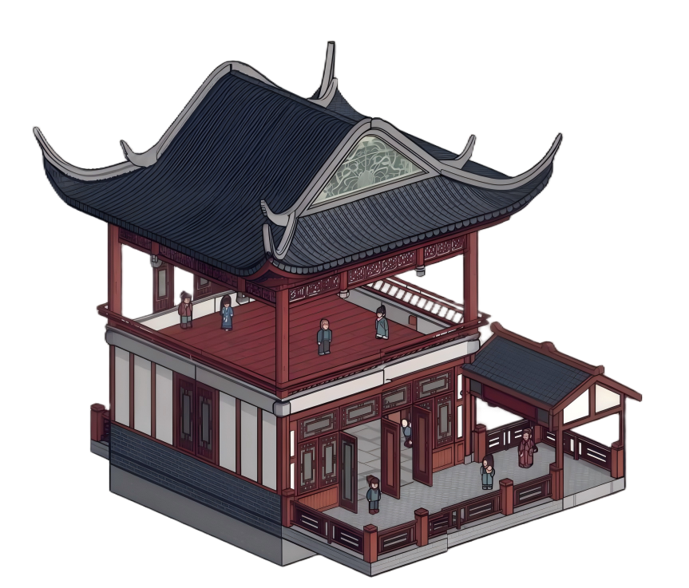

留守的人
控制台面和人物
負責選台板、掛幕布、擺角色站位，讓家中的真實空間和戲台發生連接。

初始界面
讓在外工作的人，也能陪家中長輩與孩子唱一段湖南花鼓戲，讓老戲重新熱鬧起來，也讓陪伴重新發生。
走進戲房、登上戲臺、用鄉音把家人拉近，讓每一次對唱都像一格一格亮起的溫暖燈火。
每一步都盡量簡單清楚。看不清時可開啟長輩友善模式，按鈕也會更大更好點。
主界面
今日推薦
以湖南花鼓戲為主題的熱鬧戲臺，適合家人用熟悉的鄉音彼此陪伴、互相打氣。
Virtual Stage
戲還沒有開場，大家先一起把台面、燈光和氣氛搭起來。留守的人布置舞台，遠方的人點亮燈光、送上開場句，讓搭台本身就成為陪伴。
你在 當前戲房 裡有新的陪伴內容，點「進入聊天室」就能接著聊。
戲房列表
切換不同房間Build Stage
Co-build
在正式進入戲房前，大家先各自完成一小步。留守的人負責把戲台落地，遠在外的人負責把情緒和氛圍點亮。
留守的人
負責選台板、掛幕布、擺角色站位，讓家中的真實空間和戲台發生連接。
遠方的人
負責點亮燈色、加入音效、寫下一句開場詞，讓感情先從遠方抵達。
先決定是在家門口、堂前還是院壩開唱，讓每個人先進入同一個情境。
把幕布、燈籠、小桌、火盆等元素一步步裝上去，讓戲台像被一起慢慢喚醒。
由遠方的人把燈色點亮，讓舞台從空場變成有溫度的等待。
每個人在搭台時留下一句開場白或祝福，讓這次連接從「共同搭建」開始。
因為「一起搭」比「直接進去」更容易形成共同經驗。搭的過程本身就是陪伴、配合，也是聯繫感情的開場。
二級界面
當前戲房
今晚的戲房主題是「鄉音與團圓」，特別適合讓在外的人陪家中長輩和孩子唱一段湖南花鼓戲。
正在表演
春秀正在台上三級界面
角色陣容
當前發言者高亮本幕動態
可直接說近況、報平安，或按「送上舞臺」把想說的話清楚送出。
不想打字時，可先用一句完整話帶入，再直接送出。
子女或志工可先幫長輩選好戲房、打好常用句，讓長輩只要點一下就能互動。